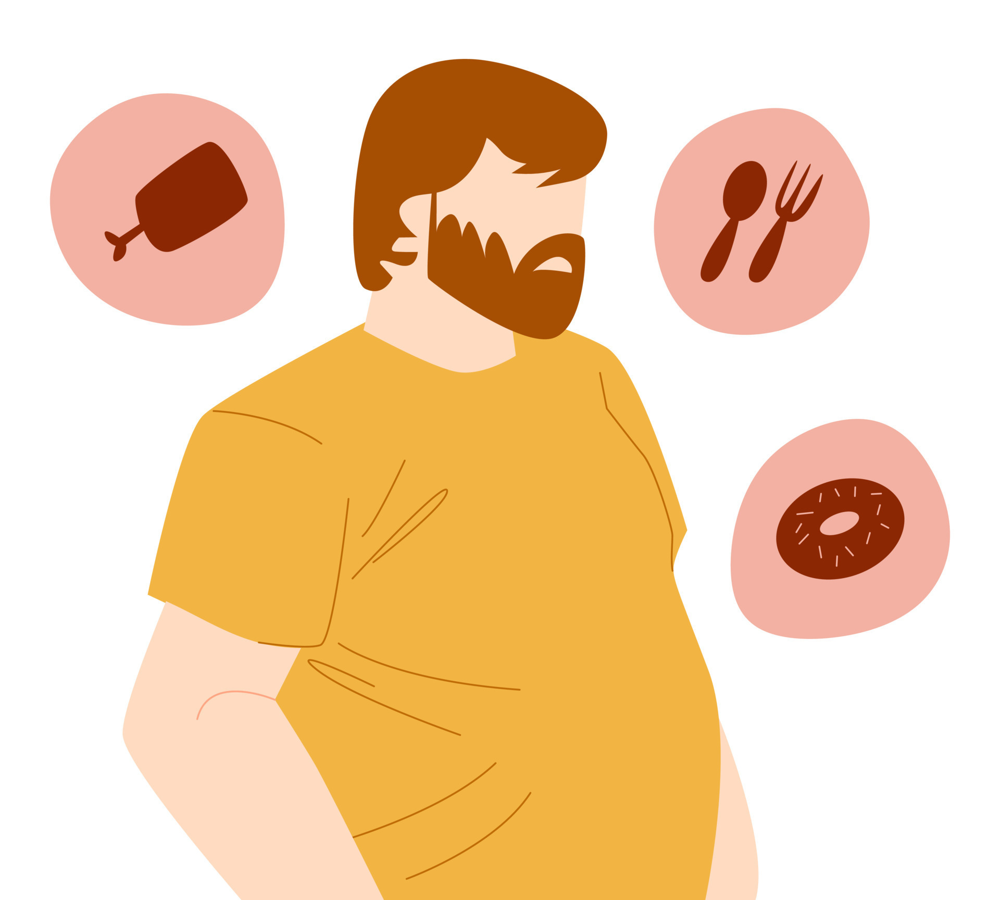
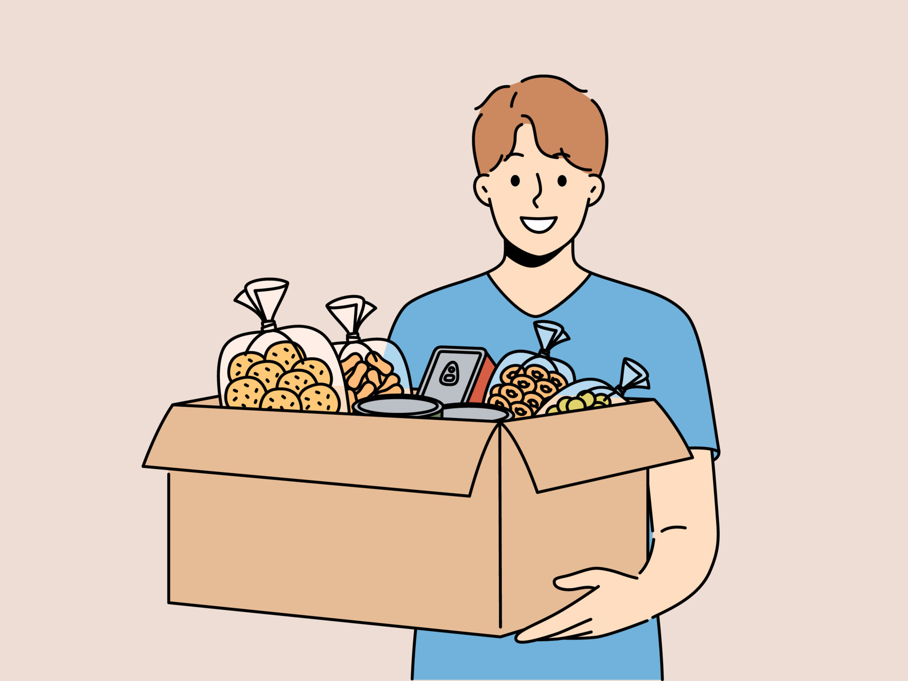
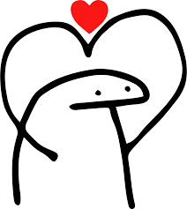

Jorge acordou em um sabado a tarde, ele estava com muita fome, mas não tinha nada para comer
Ele juntou seus trocados,colocou a primeira roupa que viu pela frente e foi ao mercado
na farmacia não tinha comida
Jorge foi para o mercado mais perto, mas ele era mais caro, prefere ficar ou ir ao outro mercado?
Jorge foi para o mercado mais distante,ficou muito cansado, mas ele era mais Barato.
Jorge tinha pouco dinheiro, entao comprou um pão e uma mortadela
Jorge foi embora, nao comeu nada e morreu de fome
Jorge pegou muitas coisas, isso iria acabarcom se dinheiro

Jorge foi embora, comeu, ficou pobre e feliz!

Muito obrigada por jogar!!!!!!!